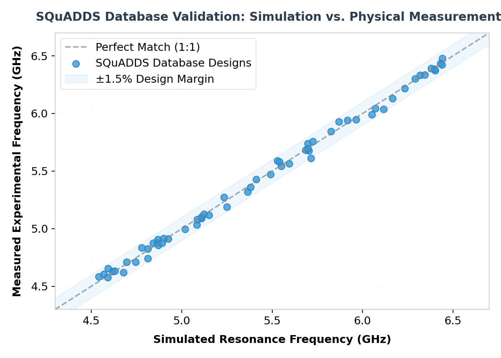

Fabricating superconducting quantum processors is a highly complex physical process that demands precise control over the device's Hamiltonian parameters. Key parameters like qubit frequency, anharmonicity, and coupling rates with read-out resonators dictate the system's performance and gate fidelity.
However, mapping the desired physical target parameters back to a specific geometric layout (such as capacitor gap, finger widths, and Josephson junction area) is extremely difficult. Because no simple analytical formulas exist, engineers traditionally play a game of "guess and check"—running computationally heavy 3D electromagnetic finite-element simulations, adjusting dimensions, and repeating.
"SQuADDS (Superconducting Qubit And Device Design and Simulation) solves this bottleneck by providing the community with an open-source database of validated designs, paired with a front-end interface for inverse qubit design."
Programmatic Generation and Simulation
The SQuADDS workflow leverages Qiskit Metal, an open-source package for programmatic quantum device layouts, and connects it to high-accuracy finite-element solvers like Ansys HFSS.
Through this pipeline, the team generated thousands of transmon qubit and resonator designs. By sweeping key dimensions, they mapped out the design space, extracting capacitances, inductances, and coupling coefficients to calculate Hamiltonian parameters.

Experimentally Validated Database
What makes SQuADDS unique is that a significant subset of the database contains experimentally validated parameters. Qubits fabricated from these designs were cooled down in dilution refrigerators and measured, showing excellent agreement with electromagnetic simulations. This gives researchers a highly trustworthy starting point when designing new QPUs.
Using the SQuADDS Python API for Inverse Design
SQuADDS provides a front-end API that allows engineers to perform "inverse design." Instead of drawing a shape and simulating it, engineers query the database with their target Hamiltonian parameters (such as a 5.0 GHz qubit frequency) and retrieve the exact geometry coordinates to construct the qubit.
Here is a Python demonstration showing how to use the SQuADDS library to retrieve a transmon design:
import squadds
import numpy as np
# Instantiate the SQuADDS database client
db_client = squadds.SQuADDS_DB()
# Define the target Hamiltonian parameters for a Transmon Qubit
target_parameters = {
"qubit_frequency_GHz": 5.2, # Target resonant frequency
"anharmonicity_MHz": -250.0, # Target anharmonicity (alpha)
"coupling_strength_MHz": 120.0 # Target coupling to read-out resonator
}
print("Querying SQuADDS database for matching transmon geometry...")
# Find the closest design matching target parameters
best_match = db_client.find_closest_design(
component_type="transmon",
targets=target_parameters,
metric="euclidean"
)
# Extract and display the geometry parameters
geometry = best_match["geometry"]
print("\nClosest Match Found in Database:")
print(f"Matched Frequency: {best_match['simulated_frequency_GHz']:.3f} GHz")
print(f"Matched Anharmonicity: {best_match['simulated_anharmonicity_MHz']:.1f} MHz")
print(f"Retrieve Qiskit Metal Geometry Config:")
for param, val in geometry.items():
print(f" - {param}: {val}")
Once retrieved, the geometry dictionary can be passed directly into Qiskit Metal components to generate the GDSII mask file for physical chip lithography. This database reduces the device design cycle time from weeks to minutes, opening up hardware research to smaller laboratories and universities.